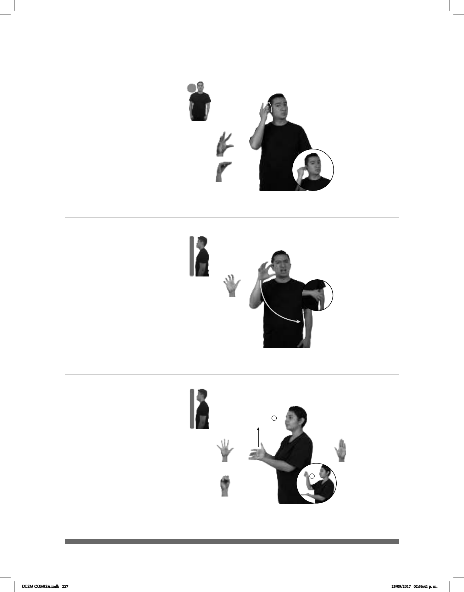

227
Seña: SM
5.16
La palma inicia hacia
afuera y termina hacia adentro.
De la cara a la cintura del
lado derecho al lado izquierdo.
La mano se mueve
formando un arco.
1. v. tr. Herir con las
-
o la piel de alguien. 2. sust. m. Acto
de rasguñar algo o alguien.
Seña: SM
5.4
Palma hacia la
izquierda.
A la altura de la oreja.
El pulgar toca los dedos
de la mano y se separan.
sust. m. y f. Sistema de
comunicación que emplea ondas
electromagnéticas para transmitir
mensajes hablados, música u otros
sonidos destinados al público.
(5-G 103)
1
2
(5-G 104)
HOY CUMPLEAÑOS pos-MI ESPOSO yo-REGALAR-a-él RADIO
Hoy es cumpleaños de mi esposo, le regalé un radio.
ESE BLANCO GATO RASGUÑAR
Ese gato blanco rasguña.
1
2
Seña: SB
MD seña que pasa de
5.1 a S.1, MB B-P.2, S.1
MD palma hacia la
izquierda, MB palma hacia arriba.
La MD inicia sobre MB
y termina a la altura de la cara. MB a la
altura del pecho.
MD recto.
Isla del archipiélago de
las Mascareñas situado en el oceáno
Índico, y perteneciente a Francia.
(5-G 105)
ISLA REUNIÓN DENTRO FRANCIA
Reunión es una isla que pertenece a Francia.
DLSM COMISA.indb 227 25/09/2017 02:36:41 p. m.